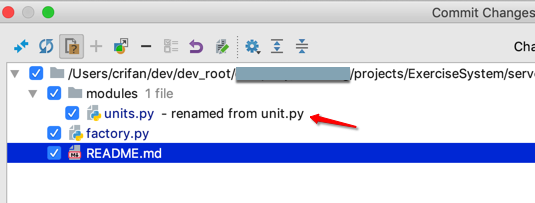
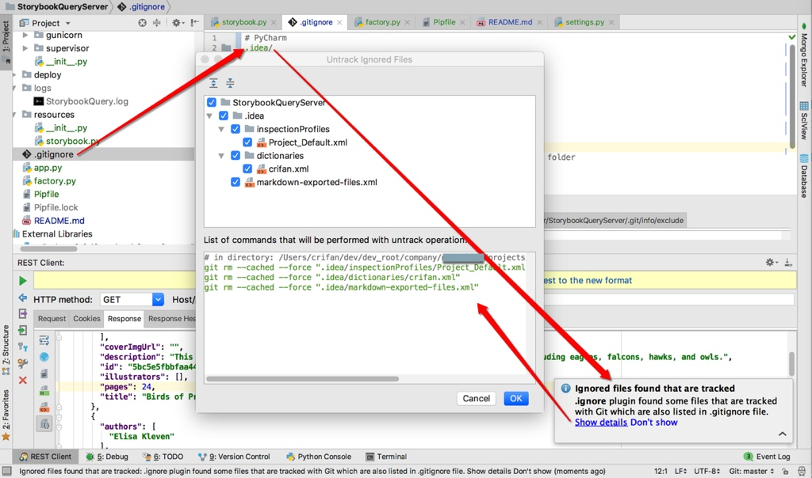
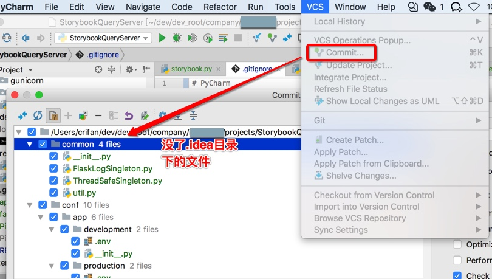
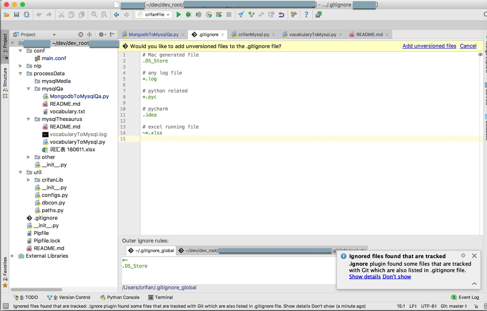
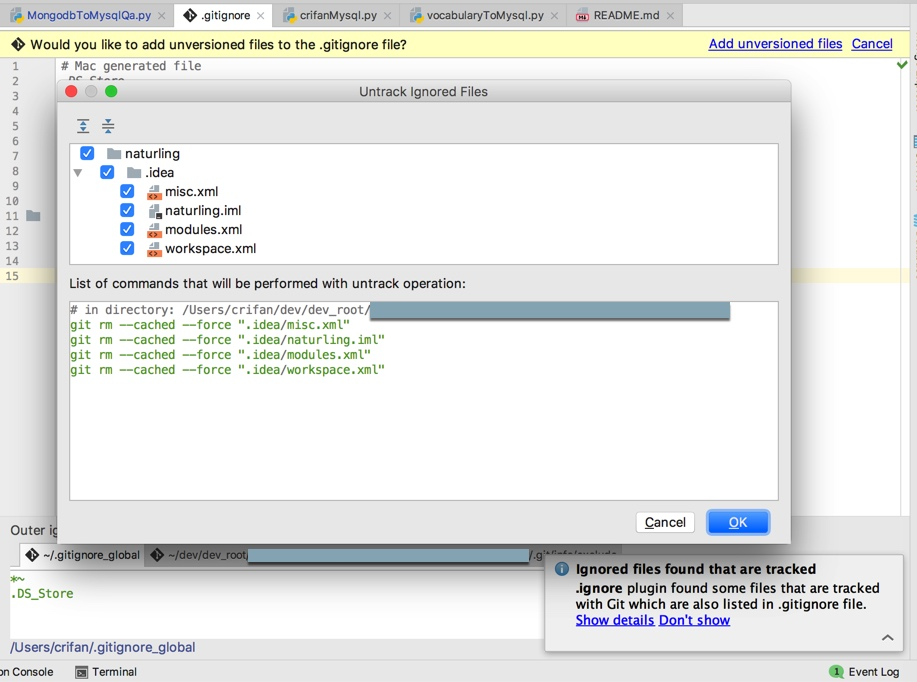

git支持
PyCharm对于代码版本管理工具：git
支持的也很好。有很多细节功能值得一提，体现了智能之处：
文件名改动提示
git提交代码时，文件名改动都可以检测出来并提示你：
某次把unit.py改为了units.py，然后commit提交代码之前，就可以看到对应提示：

很是人性化。
检测出.gitignore排除的文件残留在git记录的项目中
当去编辑.gitignore，加上.idea/后，目的是，排除和项目代码无关的PyCharm的一些配置文件
此时，PyCharm会检测到此改动，并且提示你：
.gitignore中发现排除了一些文件
但是却（由于之前没排除，而加入）存在项目中
所以会问你如何操作
点击查看详情
此时，会自动列出代码：
# in directory: /Users/crifan/dev/dev_root/xxx/StorybookQueryServer
git rm --cached --force ".idea/inspectionProfiles/Project_Default.xml"
git rm --cached --force ".idea/dictionaries/crifan.xml"
git rm --cached --force ".idea/markdown-exported-files.xml"
你点击OK后，即可从git本地缓存中删除这些之前误操作保存到git中的文件

然后再去commit提交时：

即可发现，已经去除掉了刚才还存在的.idea文件夹中的那些文件
-》由此自动帮你检测出问题，还给出问题的解决方案的IDE，才叫真的智能。
对于.gitignore的智能支持
安装了.ignore插件后，自动检测出并提示：
Would you like to add unversioned files to the .gitignore file?
意思是：虽然有些文件之前被放到了.gitignore中，但是却也被加入到了git中了：

点击Add unversioned files，弹框Untrack Ignored Files：

# in directory: /Users/crifan/dev/dev_root/xxx
git rm --cached --force ".idea/misc.xml"
git rm --cached --force ".idea/naturling.iml"
git rm --cached --force ".idea/modules.xml"
git rm --cached --force ".idea/workspace.xml"
意思是：之前已经把PyCharm的项目配置.idea目录加到git管理中了，但是此处.gitignore中却又排除管理了：
# pycharm
.idea/
所以有点自相矛盾了。
而此处的处理是：
继续把.idea/加入到项目管理中。
而把.gitignore中改为：
# pycharm
#.idea/
即可。